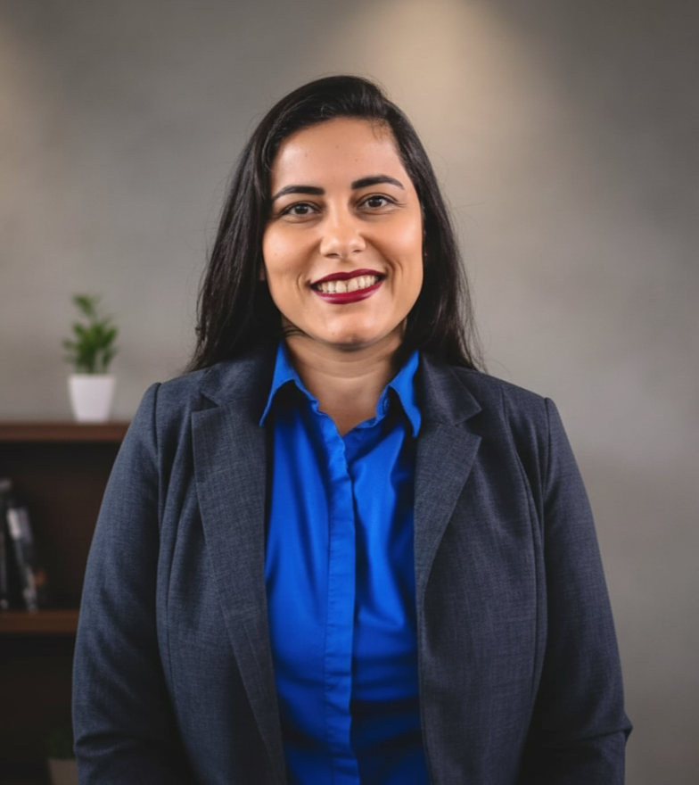

Advogada Especializada
Direito Civil e Trabalhista com Excelência
Advogada com sólida formação acadêmica e experiência em consultoria jurídica e contencioso estratégico. Cada caso é tratado com dedicação, ética profissional e foco em resultados concretos.
Agendar Consulta Agora
Áreas de Atuação
Direito do Trabalho
Consultoria em questões trabalhistas, processos do trabalho e contencioso estratégico com foco em resultados eficazes.
Direito Civil
Assessoria em responsabilidade civil, direito de família, proteção de dados e questões contratuais com abordagem técnica.
Consultoria Jurídica
Elaboração de pareceres, análise de contratos e planejamento estratégico jurídico para organizações.
Trajetória Profissional
2024 - 2026
Advogada
Barcelos & Janssen Advogados
Recuperação de Crédito Bancário e Contencioso Estratégico.
Formação
Pós-Graduações
Direito de Família, Direito do Trabalho, Processo Civil e Processo do Trabalho.
Entre em Contato
Pronto para discutir seu caso? Francine está disponível para uma consulta inicial através dos canais abaixo.
WhatsApp: +55 (31) 99163-1825
OAB/MG: 235.091
Enviar Mensagem